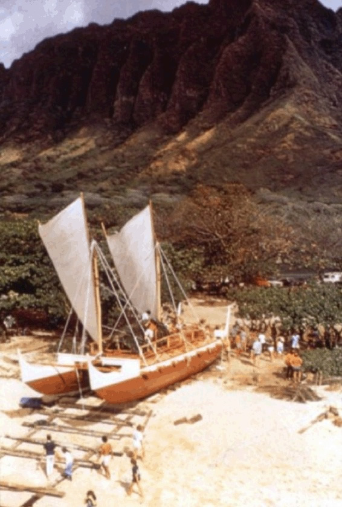

The Eddie Aikau Big Wave Invitational is on yellow alert for a double extra large swell projected to roll into the islands about a week from now.
The Eddie Aikau Big Wave Invitational is on yellow alert for a double extra large swell projected to roll into the islands about a week from now.
Just as in year’s past, the contest will run if wave face heights consistently reach 40-feet between December 14, 2023 through March 12, 2024. The Eddie invites surfers, alternates, and legends to showcase their high-performance surfing at Waimea Bay on the North Shore of Oahu.
The biggest surfing event in the world ran on January 22, 2023, for only the 10th time since it’s inception in 1984. Named after Eddie Aikau, the first lifeguard hired by the City & County of Honolulu to work on the North Shore. Not one life was lost while he served as lifeguard of Waimea Bay, as he braved waves that often reached 30 feet (9.1 m) high or more, and saved the lives of more than 500 swimmers. In 1971, Aikau was named Lifeguard of the Year.
Lost at Sea
In 1978, the Polynesian Voyaging Society was seeking volunteers for a 30-day, 2,500-mile (4,000 km) journey to re-enact the ancient route of the Polynesian migration between the Hawaiian and Tahitian island chains. Aikau joined the voyage as a crew member. The double-hulled voyaging canoe Hōkūleʻa left the Hawaiian islands on March 16, 1978. It developed a leak in one of its hulls and later capsized about twelve miles (19 km) south of the island of Molokaʻi. In an attempt to get help, Aikau paddled toward Lānaʻi on his surfboard.[11] Although the rest of the crew were later rescued by the U.S. Coast Guard Cutter Cape Corwin, Aikau's body was never found. He removed his life jacket since it was hindering his paddling of the surfboard. The ensuing search for Aikau was the largest air–sea search in Hawaiian history.
Eddie Would Go
According to maritime historian Mac Simpson, "Aikau was a legend on the North Shore, pulling people out of waves that no one else would dare to. That's where the saying came from – Eddie would go, when no one else would or could. Only Eddie dared." The phrase originated during the first Eddie contest. The waves were huge and the conditions were extremely dangerous. While the contest organizers were discussing whether to put it on, Mark Foo looked at the conditions and said "Eddie would go." The phrase stuck.
This week dozens of big wave surfers around the world await the final call whether the Eddie will be a go for the second year in a row. Timing is crucial - the call must be made 72 hours before the date of the contest to give surfers time to travel to the bay.